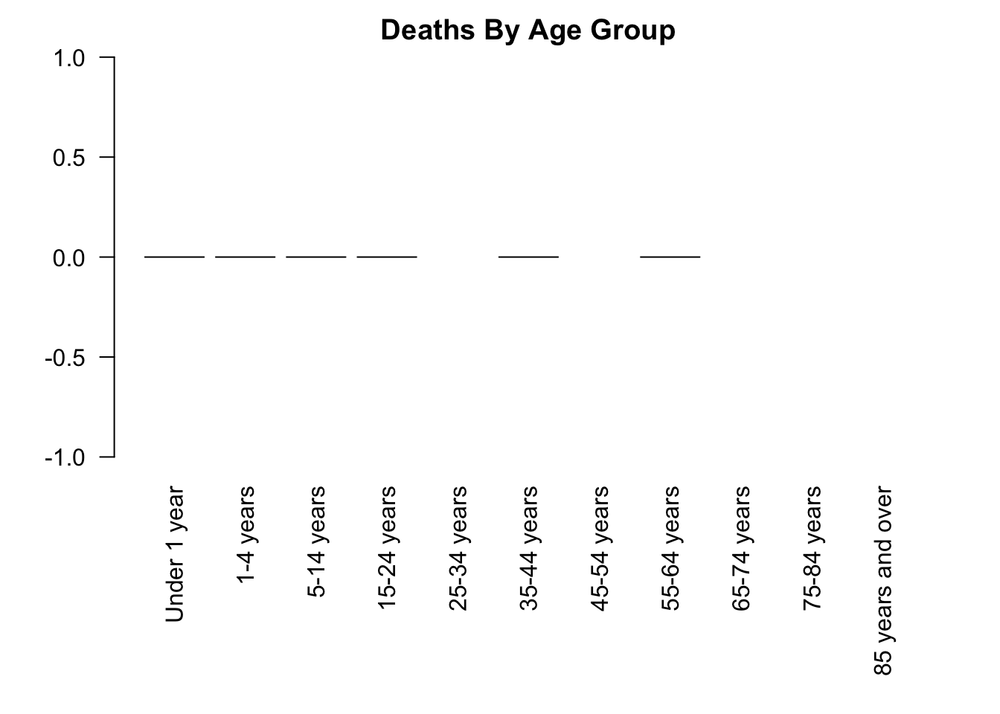

6.1 Basic Control Flow
When you write R code, you are creating commands that R will execute one at a time in order, from top to bottom. This is the basic flow of an R program, but R also provides ways that you can control the flow, using basic logic. In this section, we’ll introduce a few ways of controlling the flow of an R program, but first, we need a data set to work with.
Our working example for this chapter will be the latest (as of this book’s writing) provisional estimates of COVID-19 Deaths in the United States, available from the Centers for Disease Control at this link.
We’ve downloaded the data and saved it in the data_raw folder, and you should do the same (the data are also available here)
First, let’s load the data and do some minor cleaning:
# Load the data.
# The "Footnote" column has hyphens, which only display correctly if we specify "UTF-8" encoding.
covid <- read.csv("data_raw/Provisional_COVID-19_Death_Counts_by_Sex__Age__and_State.csv", fileEncoding = "UTF-8")
# remove rows with state totals. This will mess up our summary statistics later
covid <- covid[!grepl("Total", covid$State),]
# remove all ages category
covid <- covid[covid$Age.group != "All ages",]Download the covid data into your data_raw folder, and load/clean it using the code above.
6.1.1 Loops
One of the first things we might like to do with our data set is create visualizations.
This data contains deaths data for different states, age groups, and sexes, let’s pick a state and sex, create a bar chart for deaths in different age groups, and save the image to the output directory:
# Select only Females from Colorado
covid_co_f <- covid[(covid$State == "Colorado") & (covid$Sex == "Female"),]
# save a barplot of the deaths by age group
png("output/covid_deaths_by_agegroup_colorado_female.png")
par(mar = c(9, 4, 2, 2))
# The COVID.19.Deaths vector doesn't have row names, so we specify the bar labels with names.arg
barplot(covid_co_f$COVID.19.Deaths, names.arg = covid_co_f$Age.group,
las=2,
main="Deaths By Age Group")
dev.off()Here’s the plot we just created:
covid_co_f <- covid[(covid$State == "Colorado") & (covid$Sex == "Female"),]
par(mar = c(9, 4, 2, 2))
barplot(covid_co_f$COVID.19.Deaths, names.arg = covid_co_f$Age.group,
las=2,
main="Deaths By Age Group")
Note that three age groups have more than 0 but less than 9 cases, so the counts have been omitted from the data set to maintain confidentiality of the victims.
Let’s repeat this process for two other states:
# deaths by age group for females in Wyoming
covid_wy_f <- covid[(covid$State == "Wyoming") & (covid$Sex == "Female"),]
png("output/covid_deaths_by_agegroup_wyoming_female.png")
par(mar = c(9, 4, 2, 2))
barplot(covid_wy_f$COVID.19.Deaths, names.arg = covid_wy_f$Age.group,
las=2,
main="Deaths By Age Group")
dev.off()
# deaths by age group for females in Wyoming
covid_nm_f <- covid[(covid$State == "New Mexico") & (covid$Sex == "Female"),]
png("output/covid_deaths_by_agegroup_newmexico_female.png")
par(mar = c(9, 4, 2, 2))
barplot(covid_nm_f$COVID.19.Deaths, names.arg = covid_nm_f$Age.group,
las=2,
main="Deaths By Age Group")
dev.off()Here are these plots, too:

 Now, if we wanted to do this for all States, this would take a lot of code.
But notice that the code we wrote in each case was very similar?
This is a perfect opportunity to use looping.
Looping involves running the same R commands multiple times, usually making small changes in between.
The most common form of loop is called a for-loop.
Here’s a simple example:
Now, if we wanted to do this for all States, this would take a lot of code.
But notice that the code we wrote in each case was very similar?
This is a perfect opportunity to use looping.
Looping involves running the same R commands multiple times, usually making small changes in between.
The most common form of loop is called a for-loop.
Here’s a simple example:
vec <- c("a", "b", "c") # create a vector
for(i in vec){ # loop through the elements of the vector
print(i) # print out the current element
} # stop the loop[1] "a"
[1] "b"
[1] "c"This for-loop printed out each element of the vec variable, one at a time.
Here’s the way this works:
fortells R we want to repeat code multiple times. When R “sees” theforcommand, it knows that the code that follows will be repeated- the parentheses (
(and)) specify a vector that will be looped over (vecin this example), and a variable name to use while looping (iin this example). Each time through the loop, the variable (i) will have a different value. In this example, the first time through the loop,iwill have the value of the first element ofvec("a"), the second time through the loop,iwill have the value of the second element ofvec (“b”`), etc. The name for-loop is common in many programming languages, which reflects the fact that R is running the loop for each element of the vector. - The braces (
{and}) specify which code should be run each time through the loop. In this example, we’re just printing out the value ofi, so the result is that each element of vec is printed in order. Recall that braces are a way of specifying a block of code, and R knows that everything inside the block should be run while looping. - After it finishes looping, R continues proceeds to run any code below the for-loop.
Here’s another example of a for-loop:
[1] 1
[1] 4
[1] 9
[1] 16
[1] 25
[1] 36
[1] 49
[1] 64
[1] 81
[1] 100
[1] 11There are a few things to learn from this second example:
- The variable used in the loop doesn’t have to be
i. It can be any name you like. - You can create vectors in the for-loop. Here we use
1:10to generate a sequence of numbers from 1 to 10 (remember this?) - The value of
j(or whatever your looping variable is called) still exists after the for-loop is over. Here the last value ofjwas 10, so printingj+1produced 11.
{, }) after your for-loop, or else R may not include
for(...).
Now let’s gradually change the first example into a loop that runs visualizations for each state in our data set.
First, instead of looping over c("a", "b", "c"), let’s loop over state names:
[1] "Colorado"
[1] "Wyoming"
[1] "New Mexico"Now instead of just printing the state name, let’s create a data frame of just that state, for females:
for(i in c("Colorado", "Wyoming", "New Mexico")){
covid_state_f <- covid[(covid$State == i) & (covid$Sex == "Female"),]
}Remember, each time through the loop, the value of i matches one of the state names in the vector.
So covid$State == i will produce a logical vector which is true for the rows specific to whichever state name we’re on.
Notice that each time through the loop, the covid_state_f data frame will also change, containing only the rows for the state we’re on.
Now that we are selecting only the state of interest, let’s produce a bar plot of cases, split by age group:
# Loop though three states
for(i in c("Colorado", "Wyoming", "New Mexico")){
# select only the rows from the state
covid_state_f <- covid[(covid$State == i) & (covid$Sex == "Female"),]
# create the file name using the state's name
file_name <- paste("output/covid_deaths_by_agegroup_", i, "_female.png", sep="")
# produce the plot
png(file_name)
par(mar = c(9, 4, 2, 2))
barplot(covid_state_f$COVID.19.Deaths, names.arg = covid_nm_f$Age.group,
las=2,
main=paste("Deaths By Age Group, ", i, sep=""))
dev.off()
}We’ve used the paste function a few times in this loop, remember that it combines multiple strings using a separator, which we’ve set as an empty string (so no separator between the strings being combined).
This is some of the most long and complex code that we’ve discussed so far! It’s important that you fully understand what each line is doing, so take your time and review the above code chunk until you’re comfortable with it.
Here comes the real power of this method. So far, we’ve just produced plots for three states, but with one small change, we can produce plots for each state in the data frame:
for(i in unique(covid$State)){ # <<------ Here's the one change we made!
covid_state_f <- covid[(covid$State == i) & (covid$Sex == "Female"),]
file_name <- paste("output/covid_deaths_by_agegroup_", i, "_female.png", sep="")
png(file_name)
par(mar = c(9, 4, 2, 2))
barplot(covid_state_f$COVID.19.Deaths, names.arg = covid_nm_f$Age.group,
las=2,
main=paste("Deaths By Age Group, ", i, sep=""))
dev.off()
}This code will now loop through every unique value in the State column and produce identical visualizations for each state!
Write a for-loop which loops through each age group category, and prints the total number of COVID-19 deaths across all states (Hint: each time through the loop, subset based on the age group, then find the sum of the deaths column, then print the result).
R has other functions for looping as well, but for-loops are by far the most common. Another option is while which, rather than looping through a vector, just continues looping forever as long as some condition is true. Try ?Control for more info.
6.1.1.1 Nested Loops
Sometimes it becomes necessary to loop over multiple vectors at once. This is possible by nesting the for loops (putting one inside the other) like so:
[1] 11
[1] 12
[1] 51
[1] 52Look carefully at the output, and notice that j is changing “faster” than i: First i is 10, and j cycles through 1 and 2, then i is 50, and j cycles through 1 and 2 again.
Notice that when nesting for-loops, each for loop has its own set of braces ({, }). Don’t forget to put the second ending brace }! Another reason to use indenting is to catch mistakes like a missing ending brace.
Let’s apply this concept to our COVID-19 data. So far, we’ve been generating plots for the females only, but we can include another loop which cycles through each Sex for each state (changes marked with comments):
for(i in unique(covid$State)){
for(j in unique(covid$Sex)){ # add a nested loop for sex
covid_state_sex <- covid[(covid$State == i) & (covid$Sex == j),] # compare covid$Sex to j
# add j to the file name
file_name <- paste("output/covid_deaths_by_agegroup_", i, "_", j, ".png", sep="")
png(file_name)
par(mar = c(9, 4, 2, 2))
barplot(covid_state_f$COVID.19.Deaths, names.arg = covid_nm_f$Age.group,
las=2,
main=paste("Deaths By Age Group,", i, j)) # change add Sex to title
dev.off()
}
}Nested for-loops can be useful and even necessary, but nesting can sometimes take a very long time to run. If two nested for loops each run through 1,000 vector elements, that means a total of 1,000,000 iterations through the inner loop’s code! It’s possible to have a set of three nested for-loops or even more, but generally this is not wise practice, and in most cases there is a way to accomplish the same goal without so much much looping.
6.1.1.2 Breaking Out of For Loops.
Sometimes it’s necessary to stop a loop earlier than expected.
This can be done with break, but this is best explained after discussing if/else statements.
6.1.2 If Statements
So far, you’ve seen how to control the flow of a program by having R run the same chunk of code multiple times. Another common way of controlling flow is to change the code that runs based on some condition. Let’s return to the COVID example for a motivation.
Suppose we wanted to create a visualization of the data in each column of the data frame. Remember that the choice of visualization is affected by the type of variable being visualized (quantitative or categorical). If the column is quantitative, we’d like to produce a histogram, perhaps, and if the column is categorical, we’d like to produce a bar graph. Remember that looping runs the same code each time through the loop, so how are we supposed to change the plot method to suit the variable type? The answer is to use if statements.
Before going further, here’s a quick example:
This code produces precisely no output. Even though there is a print command, R does not print anything! The reason is that the print command is inside of an if statement, and R only runs that code if the specified condition is met. here’s how it works:
- The
ifindicates the start of the if statement. - R expects the parentheses to contain a logical statement that produces either
TRUEorFALSE. In this example, we are comparing the character strings"cat"and"dog"(which are not the same, so the result isFALSE). - If the condition is
TRUE, then the code block in curly braces is run (not true for this example). - If the condition is
FALSE, then the code block is not run. In the example (which is why this example did not print). - Whether the code block is run or not, R will then proceed to run any code below the if statement.
In the simple example above, the logical condition (“cat” == “dog”) is obviously false, so every time we run the code, the print statement will not be run. If the code never runs, then why go through the trouble of including it? The answer is that this simple example isn’t realistic, and you should look at the next example.
Let’s see how if statements can be used inside of a for loop.
[1] 4Here we have a for-loop which loops through the vector 1:5, remember that the value of i is changing each time through the loop to a different element of the vector.
Each time through the loop, R evaluates the condition i == 4.
If it is true, then the value of i is printed, otherwise nothing happens, because there is no other code in the for loop.
i takes on the value 4 exactly once, in which case the print statement runs and we see the value of i.
To summarize, the for-loop code ran five times, four of these times the if condition was FALSE and nothing happened, but one time the if condition was TRUE.
6.1.2.1 Else
If statements can also be written with an else block, which specifies code to run if the logical condition is FALSE:
for(i in 1:5){
if(i == 4){ # condition to test
print(i) # code to run if condition is TRUE
} else {
print("Not 4") # code to run if condition is FALSE
}
}[1] "Not 4"
[1] "Not 4"
[1] "Not 4"
[1] 4
[1] "Not 4"Here you can see that rather than doing nothing when the condition is not true, the second code block (after else) is run instead.
Returning to the COVID example, let’s loop through each of the columns of the data frame, and use an if statement to determine if it is a character or numeric mode (remember mode?). Then let’s choose an appropriate visualization based on the mode:
for(col_name in names(covid)){
col <- covid[[col_name]]
if(mode(col) == "numeric"){ # check if mode is numeric
hist(col, main=col_name) # plot histogram
} else { # not numeric, assume character
barplot(table(col), main=col_name) # plot barplot
}
}


Admittedly, these plots are a little crude, but the points is that the code is able to create the appropriate plot depending on the type of variable. This is another way in which you can control the flow of an R program.
Looking at visualizations like this for variables in a data set can be a useful way to identify potential problems. Look at the barplot for State, and notice that one category has more observations that the others. Which state this is (hint: the table and sort functions might be useful)? Create a new data frame by subsetting on the outlier state, and examine it. Is there cause for concern? Why or why not?
There are other variations on if statements, including using else if to test a second condition if the first is not met, and the switch function which matches an argument to one of several possibilities, and runs different code for each match. These are more advanced topics that will not be covered here.
6.1.2.2 Breaking Out of For Loops.
Sometimes it’s useful to be able to stop a for-loop before it has finished looping through the whole vector.
This can be done with the break statement, which is usually placed within an if statement.
Here’s an example:
[1] 1
[1] 2
[1] 3
[1] 4
[1] 5The if condition is FALSE at first, until i is 6, at which point the if condition is TRUE, so the break statement is run, and R exits from the loop, and doesn’t loop through the rest of the vector.
Hence we see the numbers 1-5 printed but not the numbers 6-10.
6.1.3 Formatting Conventions
Since R is a programming language, it is not immune to the common debates between programers regarding proper formatting. For example, the following for-loops are all equivalent:
[1] 1
[1] 2
[1] 3[1] 1
[1] 2
[1] 3[1] 1
[1] 2
[1] 3[1] 1
[1] 2
[1] 3But different programmers (and sometimes programming communities) will have different ideas on what is best. For this book, we’ll use the first convention, but you could reasonably choose the second as well. The third and fourth conventions should probably only be used if the code block is very short (e.g. a single command). Mainly we raise these differences because you may have to read code written by someone with a different convention as yourself.
This is the last section you should include in Progress Check 4. Knit your output document and submit on Canvas.
Any feedback for this section? Click here